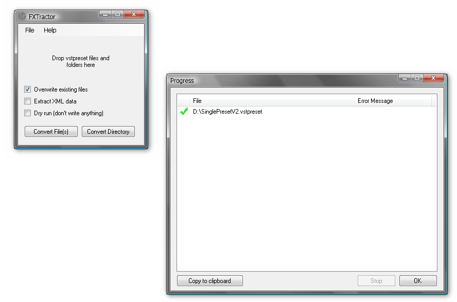

fxtractor is a small helper tool for users of the music software products from Steinberg. It allows conversion and interchange of old and new effect- and synth-preset formats.
History
With the introduction of the Media Bay in Cubase4 and Nuendo4 Steinberg decided to drop support for the old but well established FXB and FXP preset data file formats. While import of plugin presets is still supported (at least one by one) exporting has been removed completely. This was a major annoyance for many people as the lack of FXP and FXB support makes plugin preset exchange with users of other DAWs virtually impossible and backup of presets a PITA. After a very long thread in the german part of the old Steinberg user forum the idea for this small tool was born.
What does it do?
Basically FXTractor is a small tool to convert new Vst3 VSTPRESET files to old style Vst2 FXP and FXB files (if possible). Please remember: This tool is totally unsupported from Steinberg. It is a user contribution to the Cubase community written to help other users.
Status
This software works pretty well in it's current state but it is still under constant development. So please don't expect it to work perfectly out of the box all of the time. If you find a vstprest that doesn't work then create a bug report (see 'issue' above) and attach the file along with a description of the host and plugin used and we'll have look at it.
How does it work?
It is very simple. The application will open a small window that will stay on top of above all other windows on your system. Just drag the files you want to convert from the explorer/finder into the window and the magic will do the rest. At the end of the process you'll find the resulting file(s) side by side to the original vstpreset files. To convert the contents of a complete directory just drop the folder on the window. All preset files inside the folder will be converted automatically.
Of course you may use the buttons and menu entries to manually select the items to process.
Options:
Overwrite existing files: Checking this option will cause the tool to overwrite previously existing files.
Extract XML data: Checking this will extract the XML Media Bay data along with the binary preset data. The XML data is not of much real world value but it may be interesting to look at.
Dry run (don't write anything): If this option is checked the tool will operate in Read-Only-Mode.
Installation
This application currently has no installer. To start this tool just unzip the package and start the included FXTractor.exe file. MacOS and Linux users may need to open a terminal and start the application with "mono FXTractor.exe".
Building the Application From Source
The application doesn't need fancy controls or bleeding edge technologies. To build the source you'll just need Microsoft Visual Studio 2005 or later. I have not tested it but the express editions should work just fine.
The project only references plain .NET 2.0 assemblies. These are included in the Visual Studio distribution so it should be sufficient to load the csproj file and build the application.
System Requirements
This tool was written with C# and the .Net framework so it should run on all platforms supported by the Microsoft .Net Framework or the free alternative provided by the Mono project.
Windows: Windows Vista and Windows 7 should have the .Net framework files installed by default. Windows 2000 and Windows XP users may need to download a current version of the framework frome the Microsoft website.
MacOS, Linux, BSD etc: This is not tested yet but the tools should theoretically run fine with Mono, the free implementation provided by the Mono Project on MacOS, Linux and other supported platforms. Most modern Linux distributions already install the mono framework by default. MacOS users may need to download a recent version from the Mono-website (here).
FAQ
Here is the place for frequently asked questions.
Where does Cubase 4/5 store the presets?
Cubase will store the presets on different places depending on your operating system.
Windows XP:
C:/Documents and Settings/USERNAME/Application Data/VST3 Presets/PLUGIN_VENDOR/PLUGIN_NAME/
Windows Vista and later:
C:/Users/USERNAME/AppData?/Roaming/VST3 Presets/PLUGIN_VENDOR/PLUGIN_NAME/
USERNAME is the name of your current user account, eg Joe or Horst. PLUGIN_VENDOR is the vendor name of the plugin, eg Waldorf or Steinberg Media Technologies PLUGIN_NAME is the name of the plugin, eg A1 or Magneto. The preset will be stored as PRESET_NAME.vstpreset where PRESET_NAME is the name you entered in the save preset dialog box.
You may have to enable the 'show hidden files' preference in the Windows Explorer folder options to make these folders visible.
As this wasn't confusing enough Steinberg decided to add a VST3 Preset folder under My Documents as well (starting with Cubase 5.5).
Version History
09/18/2016
Moved to GitHub.
03/14/2015
Moved away from Google Project Hosting.
12/06/2010 - v0.03
Migrated to Google Project Hosting.
10/24/2009 - v0.03
Fixed some glitches if the 'Save Preset' function was used in Cubase to create the presets.
10/08/2009 - v0.02
Added buttons and menues for better screen reader support (thanks to Jinseng for pointing this out).
03/19/2009 - v0.01
Initial release.
License
Copyright (c) 2010, Rolf Meyerhoff
All rights reserved.
Redistribution and use in source and binary forms, with or without modification, are permitted provided that the following conditions are met:
Redistributions of source code must retain the above copyright notice, this list of conditions and the following disclaimer.
Redistributions in binary form must reproduce the above copyright notice, this list of conditions and the following disclaimer in the documentation and/or other materials provided with the distribution.
Neither the name of the copyright holder nor the names of its contributors may be used to endorse or promote products derived from this software without specific prior written permission.
THIS SOFTWARE IS PROVIDED BY THE COPYRIGHT HOLDERS AND CONTRIBUTORS "AS IS" AND ANY EXPRESS OR IMPLIED WARRANTIES, INCLUDING, BUT NOT LIMITED TO, THE IMPLIED WARRANTIES OF MERCHANTABILITY AND FITNESS FOR A PARTICULAR PURPOSE ARE DISCLAIMED. IN NO EVENT SHALL THE COPYRIGHT HOLDER OR CONTRIBUTORS BE LIABLE FOR ANY DIRECT, INDIRECT, INCIDENTAL, SPECIAL, EXEMPLARY, OR CONSEQUENTIAL DAMAGES (INCLUDING, BUT NOT LIMITED TO, PROCUREMENT OF SUBSTITUTE GOODS OR SERVICES; LOSS OF USE, DATA, OR PROFITS; OR BUSINESS INTERRUPTION) HOWEVER CAUSED AND ON ANY THEORY OF LIABILITY, WHETHER IN CONTRACT, STRICT LIABILITY, OR TORT (INCLUDING NEGLIGENCE OR OTHERWISE) ARISING IN ANY WAY OUT OF THE USE OF THIS SOFTWARE, EVEN IF ADVISED OF THE POSSIBILITY OF SUCH DAMAGE.
Downloads
Version 0.03 (Dec 2010)
Version 0.02 (Dec 2010)
Version 0.01 (Dec 2010)